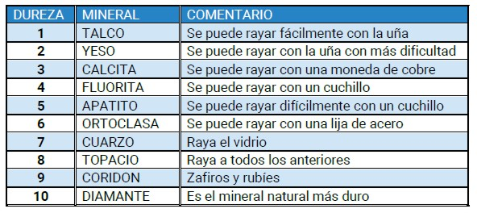
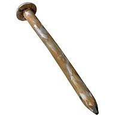

Cuerpo y Sustancia
Por lo dicho entonces, definiremos CUERPO y SUSTANCIA.
Los conceptos de cuerpo y sustancia están íntimamente relacionados. Se define al cuerpo como una porción limitada de materia, hace referencia a la forma que adapta la materia y la utilidad que presta. En cambio, la sustancia son las diferentes cualidades o tipo de materia.
Los cuerpos tienen ciertas propiedades generales como:
Las propiedades generales son las propiedades comunes a toda clase de materia; es decir, no nos proporcionan información acerca de la forma como una sustancia se comporta y se distingue de las demás.
-
Masa, cantidad de materia que tiene un cuerpo.
-
Volumen, espacio que ocupa un cuerpo.
-
Peso, resultado de la fuerza de atracción o gravedad que ejerce la Tierra sobre los cuerpos.
-
Extensión: ocupa lugar en el espacio
-
Impenetrabilidad: dos cuerpos no pueden ocupar simultáneamente un mismo lugar en el espacio
-
Inercia: mayor o menor resistencia de un cuerpo de ser acelerado o frenado
-
Indestructibilidad: la masa de un cuerpo no puede destruirse, ya sea como tal o porque se transforma en energía.
Y además tienen ciertas propiedades específicas como:
Las propiedades específicas son características de cada sustancia y permiten diferenciar un cuerpo de otro. Las propiedades específicas se clasifican en propiedades físicas y propiedades químicas.
■ Propiedades físicas. Son las que se pueden determinar sin que los cuerpos varíen su naturaleza. Entre las propiedades físicas se encuentran:
— Propiedades organolépticas: son aquellas que se determinan a través de las sensaciones percibidas por los órganos de los sentidos. Por ejemplo, el color, el olor, el sabor, el sonido y la textura.
— Estado físico es la propiedad de la materia que se origina por el grado de cohesión de las moléculas. La menor o mayor movilidad de las moléculas caracteriza cada estado. Nos referirnos a tres estados de la materia: sólido, líquido y gaseoso. Actualmente, mediante investigaciones, se propuso la existencia del cuarto estado de la materia; el plasma.
—Punto de ebullición: es la temperatura a la cual una sustancia pasa del estado líquido al estado gaseoso.
— Punto de fusión: es la temperatura a la cual una sustancia pasa del estado sólido al estado líquido.
— Solubilidad: es la propiedad que tienen algunas sustancias de disolverse en un líquido a una temperatura determinada.
— Densidad: es la relación que existe entre la masa de una sustancia y su volumen. Por ejemplo, un trozo de plomo pequeño es más denso que un objeto grande y liviano como el corcho.
— Dureza: es la resistencia que oponen las sustancias a ser rayadas. Se mide mediante una escala denominada escala de Mohs que va de uno hasta diez. Así, por ejemplo, dentro de esta escala el talco tiene una dureza de uno (1), mientras que el diamante presenta un grado de dureza de diez (10).

— Elasticidad: es la capacidad que tienen los cuerpos de deformarse cuando se aplica una fuerza sobre ellos y de recuperar su forma original cuando la fuerza aplicada se suprime.
— Ductilidad: mide el grado de facilidad con que ciertos materiales se dejan convertir en alambres o hilos.
— Maleabilidad: mide la capacidad que tienen ciertos materiales para convertirse en láminas, como el cobre o el aluminio. En general, los materiales que son dúctiles también son maleables.
— Tenacidad: es la resistencia que ofrecen los cuerpos a romperse o deformarse cuando se les golpea. Uno de los materiales más tenaces es el acero.
— Fragilidad: es la tendencia a romperse o fracturarse.
|
 FUENTE: http://www.fullquimica.com/2011/11/reacciones-quimicas.html |
Propiedades químicas. Son las que determinan el comportamiento de las sustancias cuando se ponen en contacto con otras. Cuando determinamos una propiedad química, las sustancias cambian o alteran su naturaleza. Por ejemplo, cuando dejamos un clavo de hierro a la intemperie durante un tiempo, observamos un cambio que se manifiesta por medio de una fina capa de óxido en la superficie del clavo. Decimos entonces que el clavo se oxidó y esto constituye una propiedad química tanto del hierro como del aire; el primero por experimentar una oxidación y el segundo por producirla.
Algunas propiedades químicas son:
— Combustión: es la cualidad que tienen algunas sustancias para reaccionar con el oxígeno, desprendiendo, como consecuencia, energía en forma de luz o calor. -
|
Obra publicada con Licencia Creative Commons Reconocimiento Compartir igual 4.0